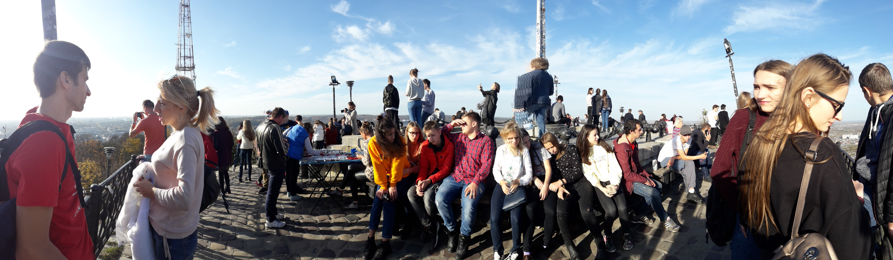

10 клас
Львів
Львів – це місто оповите легендами. До цієї поїздки готувалися ми ретельно.
Білети в цілий купейний вагон було куплено заздалегідь. Бажаючих відвідати це місто виявилося дуже багато.
І недарма. Нас навіть погода радувала. В жовтні місяці – тепло було, як літом,
світило сонце, настрій не могло ніщо зіпсувати. Наш готель був розташований у
самому центрі міста – на Площі-Ринку. Вікна виходили на стару ратушу. Було чутно всі її дзвони.
Підчас екскурсій ми відвідали: Львів епохи Середньовіччя та Відродження, Австрійський Львів,
підземелля міста, Личаківське кладовище, Шевченківський гай, Шоколадні на кавові майстерні
і ще багато іншого. Місто вразило своєю щирістю та гостинністю.
Цю поїздку ми будемо згадувати все життя і обов’язково сюди повернемося.
